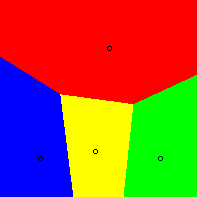
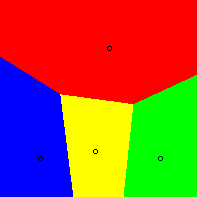

Yee Pictures
Yee pictures, developed first by Ka-Ping Yee, are another method of evaluating various voting systems. Warren Smith also developed a new programme since his first model called IEVS (infinitely extendible voting simulator) which uses Yee Pictures to examine single winner electoral methods.
There are n candidates on a two dimensional Euclidean plane, where coordinates represent political opinion and Euclidean distance between points represents the difference in opinion between two points. Candidate positions are fixed on this plane, and voter opinions are randomly distributed on the plane using a two-dimensional Gaussian distribution with variance σ. The candidates are distinctly coloured-in circles on the diagram. All other points are coloured according to the winner of the election where election method is given if the centre of public opinion were at that point. The variables for the image to change are coordinates of the candidates, electoral method, and σ.
Below, candidates are positioned at vertices of an equilateral triangle. All electoral methods return an optimal result, which is a Voronoi diagram. A similar result is shown for the four-person ideal case.
.png) 

In all cases, the ideal Yee Picture is a Voronoi Diagram. When we use Yee Pictures to evaluate voting systems, the picture generated by the given electoral method is compared to a Voronoi diagram with the same number of candidates. For example, below are some results from Yee's simulation. From left to right, it is Voronoi, Plurality Voting (First Past The Post), and IRV.
.png)